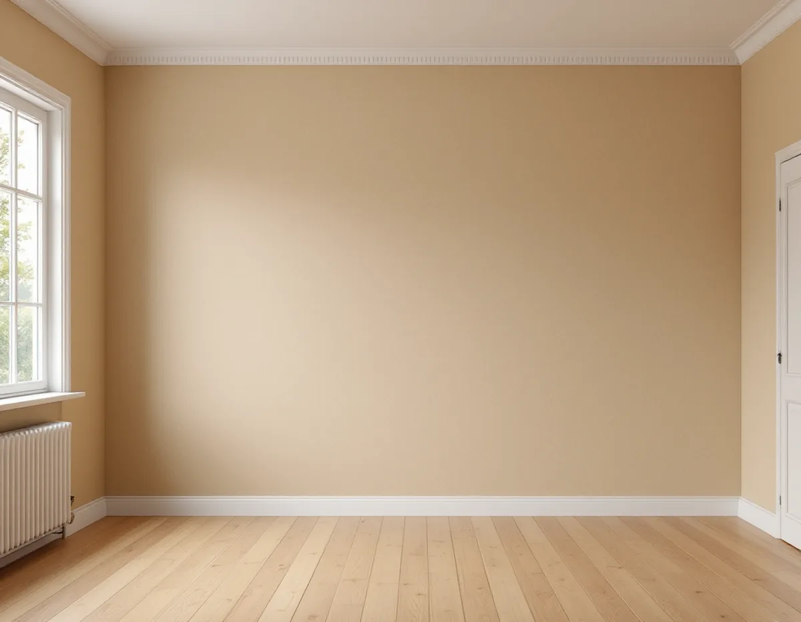
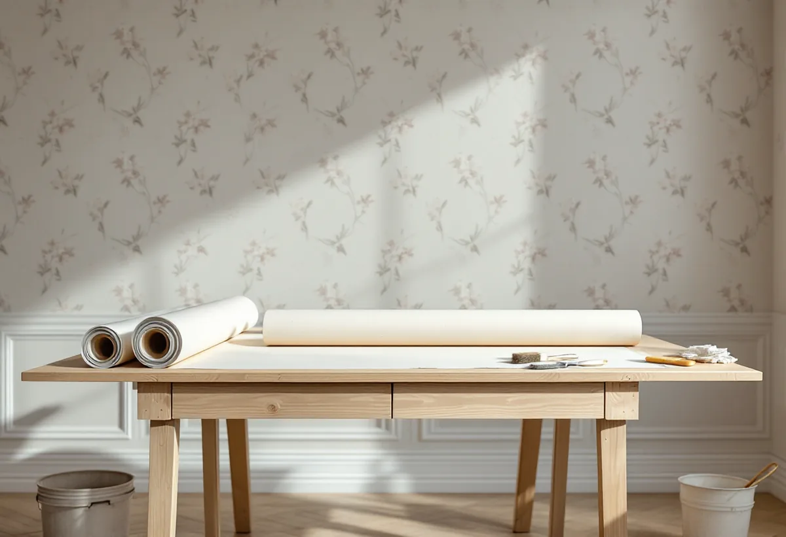

Platsbesök
Vi ser hur gammalt huset är, vad som sitter på väggarna och om underlaget är torrt.
I Spångas villastäder står hus från många årtionden på samma gata, och en tapet som passar i en villa från 1910-talet kan se fel ut i ett hus från 1950-talet. Geal Entreprenad AB tapetserar i villor, radhus och lägenheter i Spånga, och vi hjälper dig både med underlaget och med att välja en tapet som hör till huset.

Stadens vägledning Varsam utveckling av småhus- och villaområden räknar Bromsten, Nälsta, Solhem, Flysta och Sundby till villastäderna. De växte fram kring järnvägen, och på 1910-talet fick bland annat Spånga status som municipalsamhälle med egen administration. I Solhem fick bara en tiondel av tomten bebyggas, och vägledningens tabell markerar Solhem som kulturhistoriskt värdefull miljö. Närmast stationerna och längs huvudgatorna byggdes tätare, med flerbostadshus.
Det märks i siffrorna. I områdesfakta 2025 har Solhem 3 470 bostäder, varav 2 038 i småhus och 1 946 äganderätter. Bromsten har 3 826 bostäder, och där ligger 2 735 i flerbostadshus och 1 066 i småhus.

Vägledningen beskriver villastäderna som områden med individuellt utformade hus från olika tidsepoker. Kulturen i Lund visar hur tapeterna växlade: jugendstilens slingrande växtmönster i början av 1900-talet, den melerade beige ”havregrötstapeten” som blev populär i slutet av 1930-talet, fondtapeter med djärvare mönster på 1950-talet och starka färger med stora medaljonger på 1970-talet.
I dag har flera tillverkare tagit upp äldre mönster i sina kollektioner, skriver Kulturen. Har huset kvar en bit av en tidigare tapet, bakom en list eller i en garderob, kan den visa vad som satt där. Vägledningen påpekar att förändringar i de villastäder som är kulturhistoriskt värdefulla, som Solhem, behöver visa hänsyn till de värdena.
Gäller frågan fasadens kulör eller fönstren utanpå finns det mer under målare i Spånga.
I äldre villor sitter tapeten ofta på papp. Svenska Byggnadsvårdsföreningen beskriver spännpapp som ett traditionellt underlag som blev vanligt under 1800-talet. Ett annat är lumppapp. När en målare klistrat upp lumppapp på nylagd lerputs och den sedan satt helt lös, svarade föreningen att underlaget troligen inte varit tillräckligt torrt eller inte förlimmats, och att kyla kan ställa till det om det är fuktigt när arbetet görs.
Därför tapetserar vi inte på en nyputsad eller nyspacklad vägg innan den torkat, och vi vill att huset är uppvärmt medan klistret binder. Mitt i en renovering, när värmen är avstängd, väntar vi hellre några dagar.
Pappen behöver inte nödvändigtvis tapetseras. Byggnadsvårdsföreningen skriver att spännpapp fungerar utmärkt på panel som underlag både för tapeter och till exempel för limfärg, och Riksantikvarieämbetet nämner papp, makulerad juteväv, trä och puts bland de underlag limfärg kan målas på. I ett rum där en målad vägg passar huset bättre kan det vara ett alternativ till tapet.
En tapet på spänd papp kan släppa i ett hörn. Byggnadsvårdsföreningen beskriver hur det lagas: skär upp en bit ut från hörnet och fukta baksidan, spika tillbaka pappen i kanterna, klistra remsor och klistra tapeten över. För det behövs tapet att laga med, och därför råder föreningen den som väljer en äldre typ av tapet att köpa en extra rulle.
Titta också efter tecken på fukt innan något nytt sätts upp. Föreningen skriver att hög fuktighet i äldre hus och oeldade sommarhus brukar skada papperstapeter långsamt, och att det syns som lösa skarvar, fuktfläckar och svarta prickar. Då letar vi efter orsaken innan vi tapetserar.
Bor du i en bostadsrätt i Bromsten eller vid stationen behöver du normalt inte styrelsens tillstånd för ny tapet. Bostadsrättslagen 7 kap. 7 § räknar i stället upp ingrepp i bärande konstruktion, ändrade ledningar och ventilation och andra väsentliga förändringar.
Vi ser hur gammalt huset är, vad som sitter på väggarna och om underlaget är torrt.
Vi letar efter rester av äldre tapeter och går igenom mönster som passar huset.
Lagning, underlag och uppsättning står som egna poster.
Spännpapp eller lumppapp fästs, väggen förlimmas och får torka i ett varmt hus.
Tapeten sätts upp, och en extra rulle sparas för lagningar.
Att tapetsera räknas som rotarbete hos Skatteverket, i villan likaväl som i en bostadsrätt eller ägarlägenhet. I bostadsrätten ska arbetet göras innanför bostadens tak, väggar och golv.
Avdraget är 30 procent av arbetskostnaden, högst 50 000 kr per person och år och högst 75 000 kr tillsammans med rutavdrag. Material som tapet och klister ger inget avdrag, och inte heller resor. Avdraget dras direkt på Geals faktura.
Om väggen behöver nytt pappunderlag, hur mycket som ska lagas och hur svår tapeten är att passa påverkar mest. Efter ett gratis platsbesök får du ett skriftligt kostnadsförslag.
Fasad, fönster och invändig målning.
Målare i Stockholm →Takbyte, takbesiktning och plåtarbeten.
Takläggare i Spånga →Solhem, Bromsten, Flysta och Sundby.
Takrenovering i Spånga →Äldre villor, duschplats och bostadsanpassning.
Badrumsrenovering i Spånga →Trävillor och gruppbyggda radhus.
Fasadrenovering i Spånga →Massivt, lamell, fanér eller laminat.
Golvläggare i Spånga →Solhem, villastäder och kök i flera lager.
Köksrenovering i Spånga →Solhems färgskala och villorna kring stationen.
Målare i Spånga →Väggar, vindar och verandor i villastäderna.
Snickare i Spånga →